Map
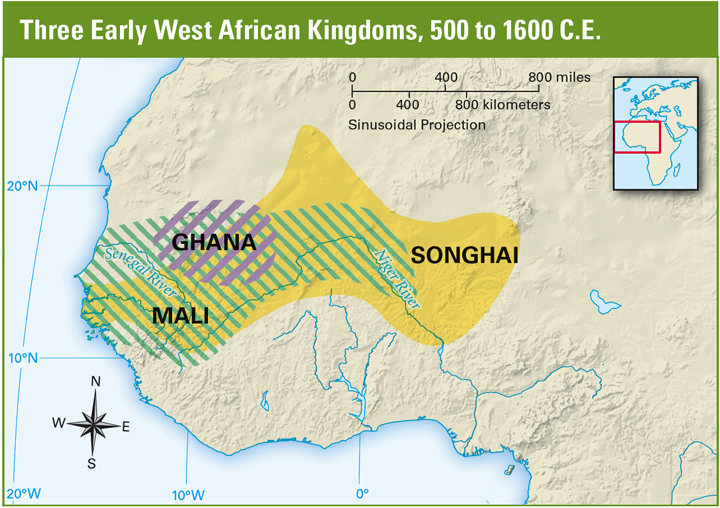
Illustration map - not to scale. Shows how the 3 empires overlap with modern West Africa.
1. Ghana Empire (c.300 - 1200)
Introduction
The Ghana Empire was the first great empire in West Africa. It was called the "Land of Gold" by Arab traders because it controlled so much gold, even though the king taxed every load of gold that passed through.
Image
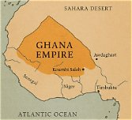
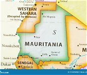
Mauritania
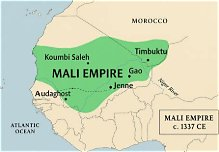
Mali
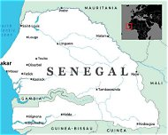
Senegal
Historical Background
Modern Countries: Mauritania, Mali, Senegal
The Soninke people built the empire. Its capital was Koumbi Saleh. It became rich by controlling trade: Gold from the south for Salt from the Sahara desert in the north. It fell because of drought, attacks from the Almoravids, and new trade routes.
Potential for Gold Deposit
VERY HIGH. Ghana Empire controlled Bambuk and Bure gold mines. Those areas are in modern Mali, Guinea and Senegal. Gold is STILL mined there today. This proves the empire was sitting on real gold.
Potential for Crude Oil Deposit
MEDIUM TO HIGH. At that time they had no technology to find oil. But today, the same land - Senegal and Mauritania - has discovered offshore oil and gas. So the empire was sitting on oil without knowing it.
2. Mali Empire (c.1235 - 1670)
Introduction
The Mali Empire was the richest empire in the world in its time. It is famous because of Mansa Musa, who was so rich that when he went to Mecca, he gave away so much gold that gold prices fell in Egypt.
Image
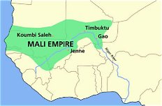
Mali
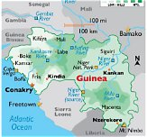
Guinea
Senegal
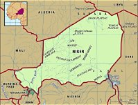
Niger
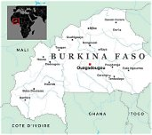
Burkina Faso
Historical Background
Modern Countries: Mali, Guinea, Senegal, Niger, Burkina Faso
Sundiata Keita founded the empire after defeating Ghana Empire. Its capital was Niani, and later Timbuktu became famous for learning, with a university and libraries. Mansa Musa ruled from 1312 to 1337. It fell because of weak kings and attacks from Songhai.
Potential for Gold Deposit
VERY HIGH. Mali was the world's biggest gold producer at that time. Even today, Mali is the 3rd biggest gold producer in Africa. Guinea's Siguiri mine is also in the old Mali area.
Potential for Crude Oil Deposit
MEDIUM. Niger, which was part of Mali Empire, produces oil today. Mali itself has oil exploration in Taoudeni Basin in the north. They did not use oil then, but the land has it.
3. Songhai Empire (c.1464 - 1591)
Introduction
The Songhai Empire was the biggest empire in West Africa. It took over after Mali fell. It was famous for trade, Islamic learning, and a strong army and navy on the Niger River.
Image
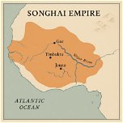
Mali
Niger
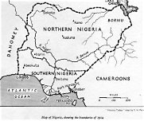
Nigeria
Historical Background
Modern Countries: Mali, Niger, Nigeria
Its capital was Gao. Askia Mohammed was its greatest king. It controlled Timbuktu and Djenne - centres of learning. It fell in 1591 when Morocco invaded with guns, which Songhai did not have.
Potential for Gold Deposit
HIGH. Gao and Timbuktu were gold trade centres. Gold came from the south and passed through Songhai to North Africa. The gold routes are still active today.
Potential for Crude Oil Deposit
VERY HIGH. This is the strongest one. Songhai covered modern Nigeria and Niger. Nigeria is now Africa's BIGGEST oil producer - Niger Delta. Niger also produces oil. So Songhai was sitting directly on top of Africa's biggest oil land.
Comparison of the 3 Empires
| Feature | Ghana Empire | Mali Empire | Songhai Empire |
|---|---|---|---|
| Period | c.300 - 1200 | c.1235 - 1670 | c.1464 - 1591 |
| Capital | Koumbi Saleh | Niani / Timbuktu | Gao |
| Famous King | Kaya Maghan | Mansa Musa | Askia Mohammed |
| Modern Countries | Mauritania, Mali, Senegal | Mali, Guinea, Senegal, Niger, Burkina Faso | Mali, Niger, Nigeria |
| Gold Potential | Very High | Very High | High |
| Oil Potential | Medium to High | Medium | Very High |
| Why It Fell | Drought & Attack | Weak Kings | Morocco with Guns |
Summary: Songhai had the highest oil potential, Mali had the highest gold, but all 3 were sitting on both gold and oil.
Exploration Methods Used To Identify Gold and Crude Oil
How Gold Was Found - Then and Now
1. Old Method (Used by the Empires)
Panning and Surface Picking: People washed river sand in a pan. Gold is heavy, so it stays at the bottom. They also picked gold nuggets they saw on the ground. This is how Bambuk and Bure gold was first found.
2. Modern Methods (Used Today)
a) Geological Mapping: Geologists walk and study the rocks to find rocks that normally hold gold, like quartz veins and greenstone belts.
b) Geochemical Sampling: Soil, rock and water samples are collected and tested in a laboratory to see if they contain small traces of gold.
c) Geophysical Survey: Machines like magnetometers and resistivity meters are used to scan under the ground without digging. They find hidden rocks that may contain gold.
d) Trenching and Drilling: Small trenches are dug and diamond drills bring out rock cores from deep underground. The cores are tested to confirm if gold is really there and how much.
e) Assay / Laboratory Test: The rock is crushed and tested to measure the exact amount of gold per tonne.
How Crude Oil Was Found - Modern Methods
The old empires could NOT find oil because they had no technology. Oil is deep underground and has no colour on the surface. These are the methods used today:
a) Geological Survey: Scientists study the rock layers. Oil is found in sedimentary rocks - rocks formed from sand and mud under ancient seas. Niger Delta and Senegal offshore have these rocks.
b) Seismic Survey: This is the MAIN method. A truck or ship sends sound waves into the ground. The waves bounce back differently when they hit oil. Computers draw a picture of what is underground.
c) Gravity and Magnetic Survey: Airplanes fly over an area with sensors to find heavy and light rocks. This helps to find basins where oil can be trapped.
d) Exploratory Drilling: After seismic shows a good place, a deep well is drilled - sometimes 2km to 4km deep. If oil comes out, it means the area has oil.
e) Well Logging and Testing: Tools are lowered into the well to measure pressure, temperature and how much oil is inside. Samples are tested in the lab.
| Gold | Crude Oil | |
|---|---|---|
| Where It Is Found | In hard rocks, quartz veins, rivers | In sedimentary rocks, deep underground, offshore |
| Main Method | Geochemical sampling + Drilling | Seismic survey + Exploratory drilling |
| Could Old Empires Find It? | YES - They could see it and pan it | NO - They had no seismic or drilling technology |
Conclusion
The possibility is HIGH that the Ghana, Mali and Songhai Empires were sitting on both gold and crude oil.
For Gold: They KNEW it and they USED it. They controlled Bambuk, Bure and Siguiri mines. The proof is that gold is still mined in the same places today - Mali, Guinea, Senegal and Burkina Faso. Modern exploration methods like geological mapping, geochemical sampling and drilling have only confirmed what the empires already knew.
For Crude Oil: They did NOT know it and they did NOT use it. Oil is hidden deep underground and needs modern technology like seismic survey and exploratory drilling to find it. But today, the same land of the old empires - Nigeria, Niger, Senegal and Mauritania - is producing oil. This proves the oil was there all along.
Final Answer: Gold was the wealth of the past. Oil is the new gold of the same region. The empires were rich in the past because of gold, and the modern countries that sit on the same land are rich today because of both gold AND oil.
Lesson: The land did not change. Only the technology to find what is inside the land changed.